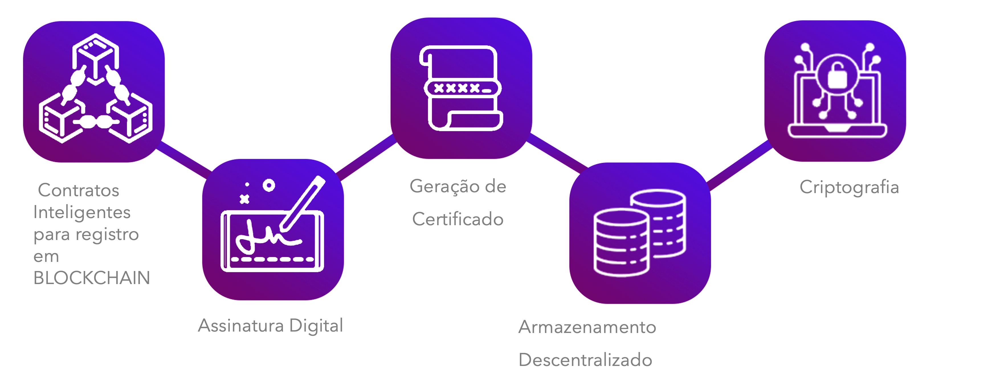

Conheça Nossa Equipe

Dono
Visão e liderança na Blockchain Educa.
Copywriter
Criação de conteúdos impactantes.
Desenvolvedor Web
Experiência de usuário fluida e eficiente.
Fique por dentro das últimas notícias, tokens populares e a evolução da Web 3.0. Tudo em um só lugar.
Inscreva-se para Receber Atualizações ExclusivasNossa missão é descomplicar o universo do blockchain e da Web 3.0, levando conhecimento acessível e de qualidade a todos. Como uma iniciativa sem fins lucrativos, acreditamos que a educação é a chave para navegar e aproveitar as oportunidades desta nova era digital. Compreender essas tecnologias emergentes não é mais um luxo, mas uma necessidade para quem deseja estar preparado para o futuro.

Imagina um futuro em que os contratos não precisam de intermediários para ser confiáveis. Isso é exatamente o que os contratos inteligentes proporcionam. Eles garantem que as condições acordadas sejam executadas de forma automática e imutável porque são programados diretamente na blockchain. Transparência e segurança em um novo nível sem burocracia.
A autoridade para criar, validar e implementar contratos inteligentes pertence a você. A blockchain atua como um livro-razão inviolável, onde cada etapa do contrato é registrada para sempre, seja para registrar propriedades, proteger direitos autorais ou administrar ativos digitais.
Transformar sua forma de fazer negócios. As transações são mais eficientes e rápidas, e os contratos inteligentes evitam fraudes. A confiança nesta nova era digital é programada, e o futuro é descentralizado.
As assinaturas digitais são a base da confiança no mundo digital, onde toda transação deve ser segura. Elas garantem que a identidade da pessoa que assina seja verdadeira e que o conteúdo do documento não tenha sido modificado. Essas assinaturas adicionam mais segurança a uma blockchain, tornando as operações rastreáveis e imutáveis.
Cada documento ou transação protegido por assinaturas digitais é protegido por criptografia avançada, permitindo que apenas as partes envolvidas possam confirmá-lo. Isso garante que a autenticidade seja preservada de ponta a ponta e reduz o risco de falsificações.
As assinaturas digitais protegem seus dados e facilitam os processos, reduzindo a necessidade de intermediários no contexto da blockchain. É a combinação ideal de eficácia e segurança para um mundo cada vez mais conectado e digital.
Imagine uma sociedade em que certificados acadêmicos, profissionais ou qualquer outro tipo de credencial sejam facilmente confiáveis e imutáveis. Isso pode ser feito com a ajuda da tecnologia blockchain. A criação de certificados baseados em blockchain garante que cada documento emitido seja único, seguro e à prova de falsificações, trazendo transparência e confiança para todos os envolvidos.
Cada certificado criado pela blockchain é registrado de forma descentralizada e permanente. Isso significa que com apenas alguns cliques, qualquer pessoa em qualquer lugar do mundo pode verificar se suas credenciais são verdadeiras sem a necessidade de intermediários. A imutabilidade da blockchain também garante que os dados nunca serão alterados ou comprometidos.
Instituições e empresas garantem a integridade de suas credenciais ao usar a blockchain para criar certificados, o que simplifica o processo de validação e reduz os custos administrativos. Essa tecnologia pode garantir um futuro mais seguro e eficiente em um mundo digital em constante mudança.
Imagina um futuro em que os contratos não precisam de intermediários para ser confiáveis. Isso é exatamente o que os contratos inteligentes proporcionam. Eles garantem que as condições acordadas sejam executadas de forma automática e imutável porque são programados diretamente na blockchain. Transparência e segurança em um novo nível sem burocracia.
A autoridade para criar, validar e implementar contratos inteligentes pertence a você. A blockchain atua como um livro-razão inviolável, onde cada etapa do contrato é registrada para sempre, seja para registrar propriedades, proteger direitos autorais ou administrar ativos digitais.
Transformar sua forma de fazer negócios. As transações são mais eficientes e rápidas, e os contratos inteligentes evitam fraudes. A confiança nesta nova era digital é programada, e o futuro é descentralizado.
Além disso, essa tecnologia contribui para uma internet mais justa e acessível, onde os usuários têm o controle dos dados em vez de grandes corporações. Você tem mais controle sobre suas informações com armazenamento descentralizado e pode garantir que elas estarão sempre seguras, independentemente de onde estejam.
A criptografia garante a proteção de seus dados de ponta a ponta em blockchain. A criptografia garante que apenas as partes autorizadas possam acessar e interpretar as informações em um ambiente onde cada transação precisa ser segura e confiável. Assim, seus dados permanecem privados e inalteráveis, e agentes mal-intencionados não podem acessá-los.
Cada bloco de dados da blockchain é criptografado por algoritmos complexos, tornando praticamente impossível qualquer modificação ou interceptação ser detectada sem ser detectada. As chaves criptográficas, que funcionam como senhas avançadas, garantem que você tenha o controle exclusivo sobre seus ativos e informações. A blockchain é uma fortaleza digital cuja integridade dos dados é inquestionável devido à sua combinação de criptografia e descentralização.
Proteger seus dados nunca foi tão importante quanto é hoje no mundo digital. Você pode ter certeza de que seus dados não estão em mãos de ninguém, que são totalmente transparentes com a criptografia em blockchain. É a tecnologia ideal para aqueles que buscam confiança e segurança online.
Visão e liderança na Blockchain Educa.
Criação de conteúdos impactantes.
Experiência de usuário fluida e eficiente.